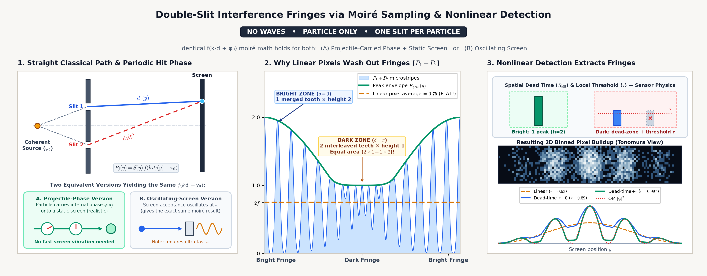

Interactive companion to the preprint by B. Sarıoğlu (2026) · DOI: 10.5281/zenodo.24541000 · GitHub · ↓ How it works (diagram)
No waves · Particle only: classical single-slit probability combs + nonlinear detection (spatial dead time & local thresholding) reproduce single-particle fringe buildup with r ≈ 0.89 (unthresholded) and r > 0.99 (thresholded).
